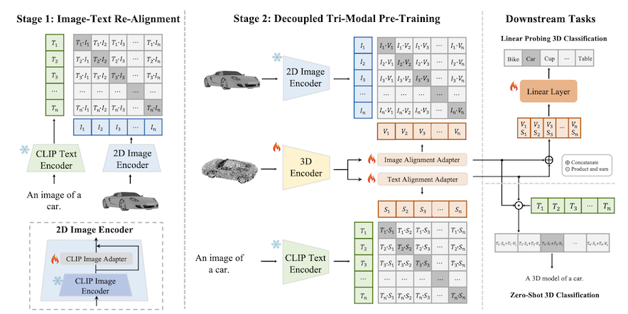

|
Research
My research interests lie at the intersection of multi-modal learning and
computer vision with the long-term goal of empowering computational models to
better perceive and interact
with the 3D visual world.
Currently, I'm working on:
- 3D shape understanding, 3D object detection for autonomous driving
- Multi-modal learning for 3D perception
|
|

|
TAMM: TriAdapter Multi-Modal Learning for 3D Shape Understanding
Zhihao Zhang*,
Shengcao Cao*
Yu-Xiong Wang
CVPR , 2024
Project Page
/
Code
/
arXiv
Introduce TriAdapter Multi-Modal Learning (TAMM), a novel
two-stage learning approach based on three synergistic
adapters to different modalities in the pre-training.
|
|
|
Tile Classification Based Viewport Prediction with Multi-modal Fusion Transformer
Zhihao Zhang*,
Yiwei Chen*,
Weizhan Zhang,
Caixia Yan, Qinghua Zheng, Qi Wang, Wangdu Chen
ACM MM , 2023
Code
/
arXiv
Propose a tile classification based viewport prediction method with Multi-modal Fusion Transformer
to improve the robustness of viewport prediction.
|
Huge thanks to Jon Barron for proving the template for the page.
|
|
{kind=link}